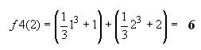

TC1028. Pensamiento computacional para ingeniería . |
||||||||||||||
|
||||||||||||||
. Objetivos:
 Modalidad:

Instrucciones:

Ejercicios: .
f1(N)= 2 * 4 * 6 *...* 2N Ejemplos: f1(3) = 2(1) * 2(2) * 2(3) = 48 f1(6) = 2(1) * 2(2) * 2(3) * 2(4) * 2(5) * 2(6) = 46080
Ejemplo: 
f3(N) = 10 - 11 + 12 - 13 .... Ejemplos: f3(2) = 10 - 11 = -1 f3(3) = 10 - 11 + 12 = 11
(4/1) - (4/3) + (4/5) - (4/7) + (4/9) - (4/11) ......... El numero que recibes te dice cuantos elementos calcula, entre más elementos mejor aproximación. Ejemplos: aproximacionPI(3) = (4/1) - (4/3) + (4/5) aproximacionPI(6) = 4/1) - (4/3) + (4/5) - (4/7) + (4/9) - (4/11)
El factorial de un número n = 1 * 2 * 3 * ... * n. Ejemplos: factorial(2) = 1 * 2 = 2 factorial(3) = 1 * 2 * 3 = 6 factorial(4) = 1 * 2 * 3 * 4 = 24
Ejemplos: multiplicacion (3, 4) =12 4 + 4 + 4 = 12 ó 3 + 3 + 3 + 3 = 12 multiplicacion (3, 2) = 6 2 + 2 + 2 = 6 ó 3 + 3 = 6 multiplicacion (1, 2) = 2 2 = 2 ó 1 + 1 = 2
8-1 = 1 / 8 = 0.125 5-3 = 1 / 5 / 5 / 5 = 0.008 Casos de prueba:
Input: Número de opción (1.
elevaPotencia)
Casos de prueba:
Input: Número de opción (2.
aproximacionPI)
Casos de prueba:
Input:
Número de opción (3. dateSlimPikachu)
1. Potencia
3. Pikachu 4. Salir

Especificaciones de entrega en Canvas:
Instrucciones para enviar tus archivos por Canvas:
Especificaciones de entrega en Alphagrader:
|